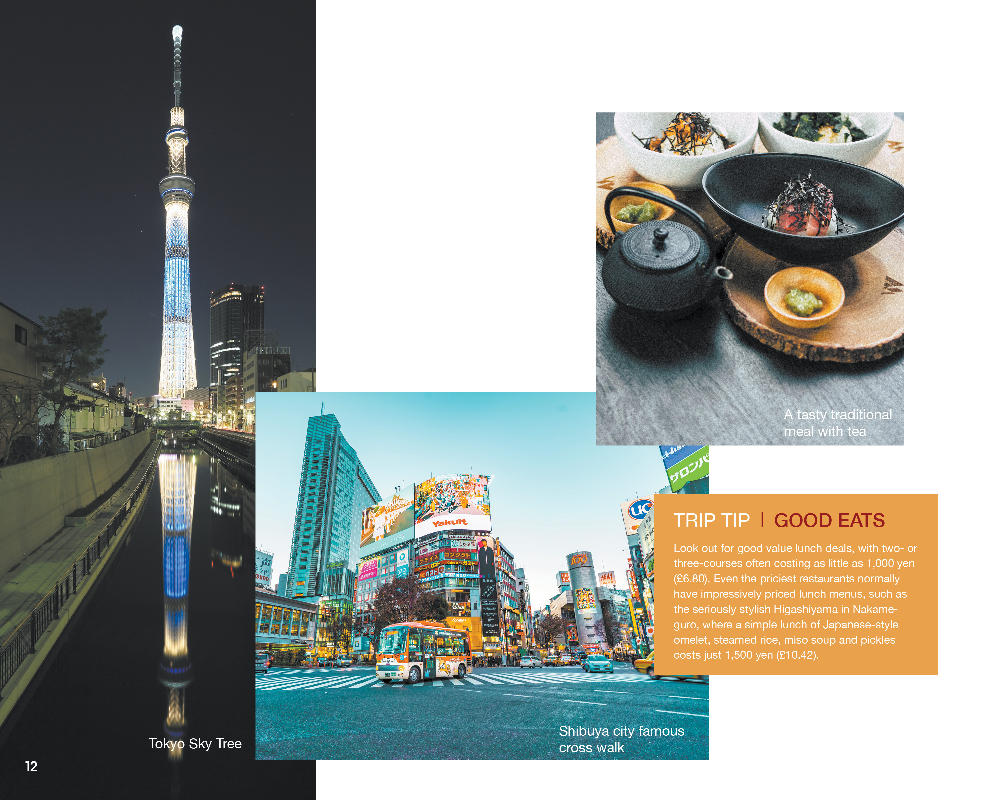

Tokyo Guide Booklet
This student projects goal was to create a guide book for a foreign city. the guild booklet world need to fit in in a pocket and have an illustrated folding map. It needs a table of content. Some kind of introduction page and a photo spread.
this project sounded like a lot of fun. I was torn between doing Barcelona in spain and Tokyo. I had a hard time picking a city until I found the image on the cover. I liked the way it looked and decided that I would do Tokyo.
The text inside the booklet is from a range of travel articles about tokyo. The text is to be seen as a placeholder.
The cover of the booklet is a brightly lit portion of the city. it is very colourful. The lights reflect off the water
bringing even more colour to the image. the sides are busy so I keep the design element minimal to give room for the eyes to rest.
I keep the table of content simple as well. It has an image of tokyo tower which looks a bit like the Eiffel but painted in
red and white. The table of content is layout in columns.
This page is the fold out map it is it folds out to be the length of four single pages. It includes landmark temples
some roads and other stuff that might be of interests. I have been thinking I might want to redesign this page a little.

on the other side of the map is a second four page spread. This one serves as a introduction page. when folded in both halves
of the spread of could be read as individual spreads. I made a small test version to check how the page it would work but I need to add the pictures
off it still. I added a travel tip in a bright orange box to help break up some of the text.

❮
❯
The photo spread has three unique images and also has a travel tip in a matching style to the page before.